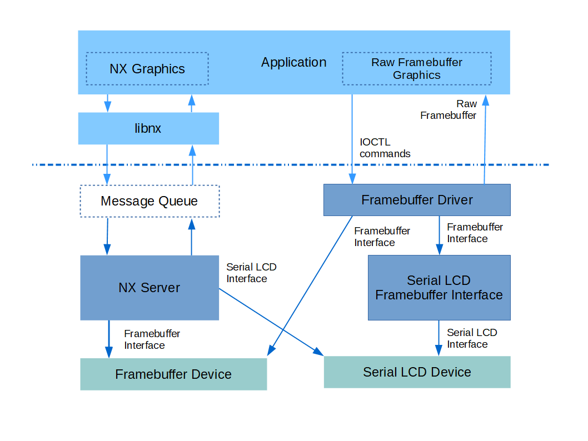

Framebuffer Character Driver
Warning
Migrated from: https://cwiki.apache.org/confluence/display/NUTTX/Framebuffer+Character+Driver
NX Graphics
NuttX has supported higher level graphics for some time with the OS’s NX Graphics Subsystem and application oriented NxWidgets and the tiny window manager NxWM. These are higher level in the sense that the primary graphical function is to support windowing and control of tools and toolbars within windows. These graphics tools often do not meet the needs of developers with very low end graphics and minimal display requirements.
Figure 1
The framebuffer character driver, along with the option LCD framebuffer interface, is an optional lighter-weight graphics interface.
Framebuffer Character Driver details
A framebuffer character driver has been recently been added
to bypass the complexity of NX and to provide a direct
application interface to the framebuffer graphic device.
The framebuffer buffer character devices, as with all
character devices, provides the interface to the graphics
device via stand POSIX VFS commands (open(), close(),
read(), write(), seek(), …), through IOCTL commands,
and for this driver via the mmap() function. These
interfaces are described below,
The framebuffer character driver is located in the NuttX
source tree at drivers/video/fb.c. It is enabled in the
build with CONFIG_VIDEO_FB=y. In order to register the
framebuffer driver, you will need to include logic in the
your board-specific start-up function that calls
fb_register() That code sequence might look something
like:
#include <nuttx/video/fb.h>
#ifdef CONFIG_VIDEO_FB
/* Initialize and register the simulated framebuffer driver */
ret = fb_register(0, 0);
if (ret < 0)
{
syslog(LOG_ERR, "ERROR: fb_register() failed: %d\n", ret);
}
#endif
The fb_register() function takes two parameters:
display. The display number for the case of boards supporting multiple displays or for hardware that supports multiple layers (each layer is consider a display). Typically zero.
plane. Identifies the color plane on hardware that supports separate framebuffer “planes” for each color component. Should be zero because no planar hardware is currently supported by NuttX.
fb_register() will register the framebuffer character device
at /dev/fb N where N is the display number if the devices
supports only a single plane. If the hardware supports
multiple color planes, then the device will be registered
at /dev/fb N-M where N is the again display number but M
is the display plane.
There is a simple example at apps/examples/fb that provides
an illustration of most of the following interfacing methods.
POSIX Interfaces
The interaction with the framebuffer character driver via POSIX
VFS interface calls is the same as for other character drivers.
The only aspect that might require some additional discussion
is the use of read(), write(), and seek().
read()returns data from the framebuffer memory and updates the file position based on the number of bytes read.write()puts data into the framebuffer memory and also updates the file position.
That file position is initially set to the position
zero meaning the beginning of the framebuffer. It is
advanced each time you read() from or write() to the
framebuffer. Is also updated by seek():
seek()sets the file position to any desired location within the framebuffer.
The file position is in units of bytes. This can be
confusing because other positional data may be in units
pixels. Pixels have different depth in different displays,
that is, different graphic hardware may support pixels with
differing bits-per-pixel. The pixel depth can be obtained
using one of the IOCTL commands listed below. Since the file
position is in bytes, the bits-per-pixel must be taken account
when using read(), write(), and seek(). The usual conversion
from pixels to bytes is:
start_byte = (start_pixel * bits_per_pixel) >> 3;
end_byte = (end_pixel * bits_per_pixel + 7) >> 3;
While the framebuffer may be accessed with these POSIX interfaces,
a more typical way of interacting with the framebuffer from an
application would involve use of mmap() as described below.
IOCTL Commands
FBIOGET_VIDEOINFO. Get color plane info. Its argument is pointer a writable instance ofstruct fb_videoinfo_s:struct fb_videoinfo_s { uint8_t fmt; /* see FB_FMT_* */ fb_coord_t xres; /* Horizontal resolution in pixel columns */ fb_coord_t yres; /* Vertical resolution in pixel rows */ uint8_t nplanes; /* Number of color planes supported */ };
FBIOGET_PLANEINFO. Get video plane info. It received a pointer to a writable instance ofstruct fb_planeinfo_sas its argument:struct fb_planeinfo_s { FAR void *fbmem; /* Start of frame buffer memory */ uint32_t fblen; /* Length of frame buffer memory in bytes */ fb_coord_t stride; /* Length of a line in bytes */ uint8_t display; /* Display number */ uint8_t bpp; /* Bits per pixel */ };
FBIOGET_CMAPandFBIOPUT_CMAP. Get/Put RGB color mapping. These commands are available only if the hardware and framebuffer driver support color mapping (CONFIG_FB_CMAP=y). They each take a pointer to an instance ofstruct fb_cmap_sas an argument (writeable forFBIOGET_CMAPand read-only forFBIOPUT_CMAP).#ifdef CONFIG_FB_CMAP struct fb_cmap_s { uint16_t first; /* Offset offset first color entry in tables */ uint16_t len; /* Number of color entries in tables */ /* Tables of color component. Any may be NULL if not used */ uint8_t *red; /* Table of 8-bit red values */ uint8_t *green; /* Table of 8-bit green values */ uint8_t *blue; /* Table of 8-bit blue values */ #ifdef CONFIG_FB_TRANSPARENCY uint8_t *transp; /* Table of 8-bit transparency */ #endif }; #endif
FBIOGET_CURSOR. Get cursor attributes. This command is available only if the hardware and framebuffer driver support cursors (CONFIG_FB_HWCURSOR=y). It take a pointer to a writable instance ofstruct fb_cursorattrib_s:#ifdef CONFIG_FB_HWCURSOR #ifdef CONFIG_FB_HWCURSORIMAGE struct fb_cursorimage_s { fb_coord_t width; /* Width of the cursor image in pixels */ fb_coord_t height /* Height of the cursor image in pixels */ const uint8_t *image; /* Pointer to image data */ }; #endif struct fb_cursorpos_s { fb_coord_t x; /* X position in pixels */ fb_coord_t y; /* Y position in rows */ }; #ifdef CONFIG_FB_HWCURSORSIZE struct fb_cursorsize_s { fb_coord_t h; /* Height in rows */ fb_coord_t w; /* Width in pixels */ }; #endif struct fb_cursorattrib_s { #ifdef CONFIG_FB_HWCURSORIMAGE uint8_t fmt; /* Video format of cursor */ #endif struct fb_cursorpos_s pos; /* Current cursor position */ #ifdef CONFIG_FB_HWCURSORSIZE struct fb_cursorsize_s mxsize; /* Maximum cursor size */ struct fb_cursorsize_s size; /* Current size */ #endif }; #endif
FBIOPUT_CURSOR. Set cursor attributes. This command is available only if the hardware and framebuffer driver support cursors (CONFIG_FB_HWCURSOR=y). It take a pointer to a writable instance ofstruct fb_setcursor_s:#ifdef CONFIG_FB_HWCURSOR struct fb_setcursor_s { uint8_t flags; /* See FB_CUR_* definitions */ struct fb_cursorpos_s pos; /* Cursor position */ #ifdef CONFIG_FB_HWCURSORSIZE struct fb_cursorsize_s size; /* Cursor size */ #endif #ifdef CONFIG_FB_HWCURSORIMAGE struct fb_cursorimage_s img; /* Cursor image */ #endif }; #endif
FBIO_UPDATE. This IOCTL command updates a rectangular region in the framebuffer. Some hardware requires that there be such a notification when a change is made to the framebuffer (see, for example, the discussion of LCD drivers below). This IOTCL command is ifCONFIG_NX_UPDATE=yis defined. It takes a pointer to a read-only instance ofstruct nxgl_rect_sthat describes the region to be updated:struct nxgl_rect_s { struct nxgl_point_s pt1; /* Upper, left-hand corner */ struct nxgl_point_s pt2; /* Lower, right-hand corner */ };
mmap()
Above we talked about using read(), write(), and seek() to
access the framebuffer. The simplest way to access the
framebuffer, however, is by using the mmap() to map
the framebuffer memory into the application memory
space. The following mmap() command, for example, can
be used to obtain a pointer to a read-able, write-able
copy of the framebuffer:
FAR void *fbmem;
fbmem = mmap(NULL, fblen, PROT_READ|PROT_WRITE, MAP_SHARED|MAP_FILE, fd, 0);
if (state.fbmem == MAP_FAILED)
{
/* Handle failure */
...
}
printf("Mapped FB: %p\n", fbmem);
Where fd is the file descriptor of the opened framebuffer
character driver and fblen was obtained via an IOCTL
command as described above. NOTE that the framebuffer
buffer pointer is also available within the values
returned by the IOCTL commands. The address is a
kernel memory address and may not be valid in all
build configurations. Hence, mmap() is the preferred,
portable way to get the framebuffer address.
Framebuffer vs. LCD Graphics Drivers
Framebuffer graphics drivers are very common in high-end CPUs but most low-end, embedded hardware will not support a framebuffer.
A framebuffer graphics driver supports a region of memory that is shared both by the software and by the graphics hardware. Any modification to the framebuffer memory results in a corresponding modification on the display with no intervening software interaction. Some video memory is dual ported to support concurrent video processor and application processor accesses; or perhaps the LCD peripheral just constantly DMAs the framebuffer memory to the graphics hardware.
Most low-end embedded MCUs have a much simpler hardware interface: The interface to the LCD may be through a simple parallel interface or, more commonly, through a slower serial interface such as SPI. In order to support such low-end hardware with the framebuffer character driver, a special software layer called the Framebuffer LCD Front End has been developed. This is the topic of the next paragraph.
LCD Framebuffer Front-End
The LCD Framebuffer Front-End provides a standard NuttX
framebuffer interface, but works on top of a standard
parallel or serial LCD driver. It provides the framebuffer,
the framebuffer interface, and the hooks to adapt the LCD
driver. The LCD framebuffer front-end can be found in the
NuttX source tree at drivers/lcd/lcd_framebuffer.c.
In order to provide updates to the LCD hardware after
updates to the framebuffer, the LCD framebuffer front-end
must be notified when significant changes to the framebuffer
have been made. This notification is supported when
CONFIG_NX_UPDATE=y is defined in the configuration. In
this case, the LCD framebuffer front-end will support
the special. OS-internal interface function nx_notify_rectangle()
which defines the rectangular region in the framebuffer that
has been changed. In response to a call to nx_notify_rectangle()
will use the lower-level LCD interface to update only that
rectangular region on the display.
This kind of update for standard LCD drivers is very efficient: It is usually more efficient to update a region on the display than it is for form a complex image with text and line drawing; the updated region seems to update very quickly because of that. In fact, many of the low-end LCD drivers already include an internal framebuffer to support this style of LCD update.
When used with LCD character driver, the nx_notify_rectangle()
function will be called by the character river in response
to the FBIO_UPDATE IOCTL command.
Another advantage of the framebuffer, both the LCD internal framebuffer and the framebuffer character driver, is that super-efficient reading of the LCD display memory: The LCD display memory is not read at all! The read is from the copy in the framebuffer.
Of course, using both an LCD internal framebuffer with the framebuffer character drivers is wasteful; one framebuffer is enough!
As a caution, it is important to remember that a framebuffer can be quite large. For example, a 480x320 display with 16-bit RGB pixels would require an allocated framebuffer of size 300 KiB. This is inappropriate with most small MCUs (unless they support external memory). For tiny displays, such as 128x64 1-bit monochromatic displays, the framebuffer memory usage is not bad: 1 KiB in that example.
Framebuffer Graphics Library
Now the missing part is some kind of application-space framebuffer graphics library. The NuttX framebuffer driver is superficially similar to the Linux framebuffer driver so there is a lot of support for Linux framebuffer graphics support that should be easily ported to NuttX – Perhaps DirectFB would be an GPL option? SDL with its MIT license might be a more compatible source for such a port.